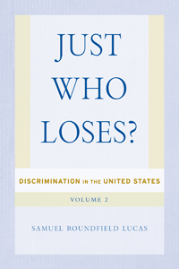

<body bgcolor="#FFFFFF" text="#000000" link="#0000FF" vlink="#CC0000" alink="#CC0000"><center><hr width="350" size="1" align="center" noshade>A rich vein of data that lays bare pervasive discriminatory environments and their systemic consequences for both targets and non-targets of discrimination<hr width="350" size="1" align="center" noshade><p><a href="https://cdcshoppingcart.uchicago.edu/Cart/ChicagoBook.aspx?ISBN=9781439908501&&PRESS=temple" target="_top">Buy this book!</a> | <a href="https://cdcshoppingcart.uchicago.edu/Cart/Cart.aspx?PRESS=temple" target="_top">View Cart</a> | <a href="https://cdcshoppingcart.uchicago.edu/Cart/Cart.aspx?PRESS=temple" target="_top">Check Out</a></p><p></p></center><!--none//--><h1>Just Who Loses?</h1>
<H2>Discrimination in the United States, Volume 2</H2>
<h3>Samuel Roundfield Lucas</h3>
<P>cloth 1-4399-0850-8 $86.00, Mar 13, <FONT COLOR=#990033>Available</FONT>
<br>Electronic Book 1-4399-0852-4 $86.00 <FONT COLOR=#990033>Available</FONT>
<BR> 370 pp
6x9
24&nbsp;tables 73&nbsp;figures
</P><P>In <i>Just Who Loses?</i> Samuel Roundfield Lucas continues his comprehensive assessment of sex and race discrimination in the United States that he began with <i>Theorizing Discrimination in an Era of Contested Prejudice</i>.
<P>This new volume demonstrates that the idea of discrimination being a zero-sum game is a fallacy. If discrimination costs women, men do not necessarily reap the gains. Likewise, if discrimination costs blacks, non-blacks do not reap the gains. Lucas examines the legal adjudication of discrimination, as well as wider public debates about policy on the issue, to prove how discrimination actually operates.
<P>He uses analytic methods to show that across the socioeconomic lifecycle&#8212;including special education placement, unemployment, occupational attainment, earnings, poverty, and even mortality&#8212;both targets and non-targets of discrimination "lose."
<P>In <i>Just Who Loses?</i> Lucas proposes the construction of a broad-based coalition to combat the pervasive discrimination that affects social relations and law in the United States.
<BR>&nbsp;<h2>Excerpt</h2><P>Excerpt available at <a href="http://www.temple.edu/tempress">www.temple.edu/tempress</a></p>
<BR>&nbsp;<h2>Reviews</h2>
<p><i>"The core argument that discrimination is about the context of social life and damaged social relations is a powerful one. The methodological injunction to measure variation in discrimination, rather than simply observing gross or net inequality, is smart and to be applauded. The movement away from a focus on individuals or, worse yet, individual acts, and to theorize social relations as social context are welcome interventions into the stratification literature.... When it comes to discrimination, the empirical answer Lucas provides is that </i>everyone<i> loses. Discrimination damages social relations and leads to weaker social institutions and a habitual neglect of the humanity of all human beings. This is a profound reformulation of research questions about discrimination, one that is likely to be scientifically and politically fruitful."</i> <br>&#151;<b><i>Contemporary Sociology</i></b>
<p><i>"Samuel Roundfield Lucas, in his recent book </i>Just Who Loses<i>, suggests that we often assume that discrimination has winners and losers; however, Lucas argues that social scientists need to interrogate discrimination more fully. He convincingly argues that the traditional approach to understanding discrimination is misguided. Rather than center attention on inequality, Lucas pushes scholars to examine discrimination, which may or may not produce inequality and may not always be a zero-sum game…. I believe this is the most thoughtful and coherent theoretical articulation of the idea that I have read. When completed, </i>Discrimination in the United States<i> is likely to become foundational work in social stratification. Similar to volume 1, I found that this volume made me think more deeply about not only the ideas Lucas so cleverly develops, but also how these ideas may inform my own thinking and research. This book is another solid volume in an extremely ambitious research project.... This contribution is a great volume that scholars should read, contemplate, and challenge."</i> <br>&#151;<b><i>American Journal of Sociology</i></b>
<BR>&nbsp;<h2>Contents</h2><P>
<p>List of Tables and Figures
<br>Acknowledgments
<br>
<br>Introduction: Evidently, Too
<br>
<br>1. Effects of Discrimination in the United States
<br>2. Biological Explanations of Gender and Racial Inequality in the United States
<br>3. Socialization and Cultural Difference Explanations of Race and Gender Inequality in the United States
<br>4. The Comparative Measurement of Expected Exposure to Discrimination
<br>5. Education and Discrimination
<br>6. Opportunity to Work and Discrimination
<br>7. Job Quality and Discrimination
<br>8. Poverty, Earnings, and Discrimination
<br>9. Mortality and Discrimination
<br>10. Just Who Loses?
<br>
<br>References
<br>Index
</P><BR>&nbsp;<H2>About the Author(s)</H2>
<P><b>Samuel Roundfield Lucas</b> is Professor of Sociology at the University of California-Berkeley. He is the author of <i><a href="1971_reg.html" target="_top">Theorizing Discrimination in an Era of Contested Prejudice: Discrimination in the United States, Volume 1</a></i> (Temple) and <i>Tracking Inequality: Stratification and Mobility in American High Schools</i>. He is also a co-author of <i>Inequality by Design: Cracking the Bell Curve Myth</i>.</P>
<BR><H2>Subject Categories</H2>
<p><A HREF="/tempress/sociology.html" TARGET="_top">Sociology</a>
<BR><A HREF="/tempress/race.html" TARGET="_top">Race and Ethnicity</a>
<BR><A HREF="/tempress/women.html" TARGET="_top">Women's Studies</a>
</p>
<p align="center"><a href="https://cdcshoppingcart.uchicago.edu/Cart/ChicagoBook.aspx?ISBN=9781439908501&&PRESS=temple" target="_top">Buy this book!</a> | <a href="https://cdcshoppingcart.uchicago.edu/Cart/Cart.aspx?PRESS=temple" target="_top">View Cart</a> | <a href="https://cdcshoppingcart.uchicago.edu/Cart/Cart.aspx?PRESS=temple" target="_top">Check Out</a></p><p><font face="Arial" size="1"><a href="copyright.html" onMouseOver="window.status='Web Copyright Policy';return true;" onMouseOut="window.status=''" title="Web Copyright Policy">&copy;</a> 2015 <a href="http://www.temple.edu" target="new" onMouseOver="window.status='Link to Temple University home page';return true;" onMouseOut="window.status=''" title="Link to Temple University home page">Temple University</a>. All Rights Reserved. http://www.temple.edu/tempress/titles/1972_reg.html</font></p>